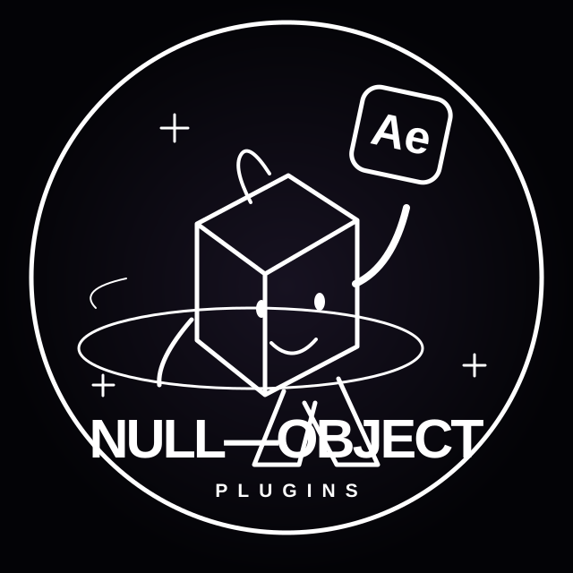

Null ObjectCREATIVE ARCHIVE

Composition: Creative_Archivecreative_tape.mp3
Space воспроизведение · ← → перемотка · 1–4 разделы
# Layer Name
After Effects · Edits · Motion Design

Space воспроизведение · ← → перемотка · 1–4 разделы